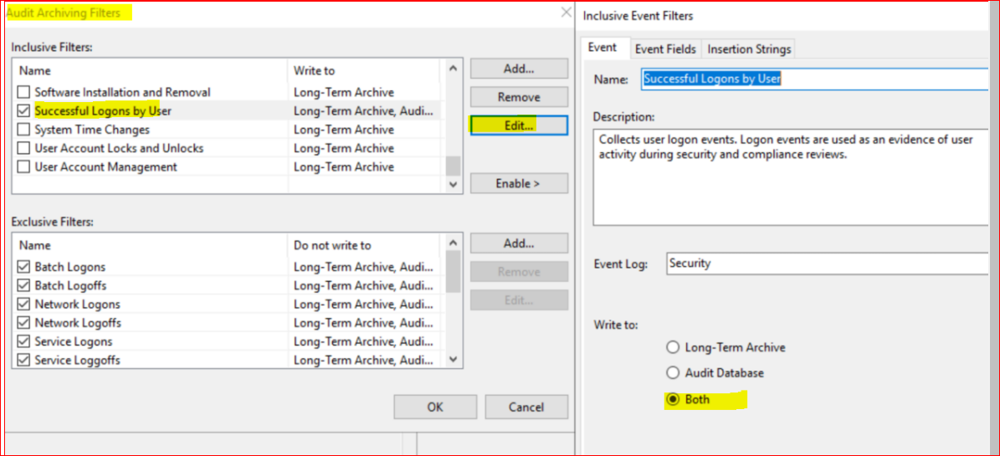

Symptom
You have configured a Windows Servers monitoring plan in Netwrix Auditor, the data is being collected, however, the reports under Windows Server -> Event Log do not show any data.
Cause
To review your data in these reports, you should configure a monitoring plan for Netwrix Auditor Event Log Manager.
Resolution
-
On the computer that hosts Netwrix Auditor Server, run Netwrix Auditor Event Log Manager.
-
Navigate to Audit Archiving filters and configure them as described in Configure Audit Archiving Filters for Event Log.
 -
Perform any test changes, for example, log in to a server for which you want to review data in reports.
-
Wait for 10 - 15 minutes for changes to take effect and run reports.